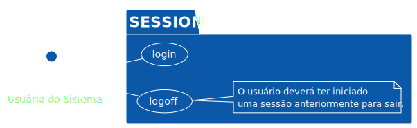
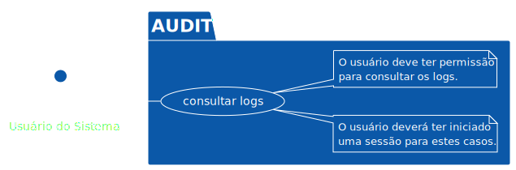
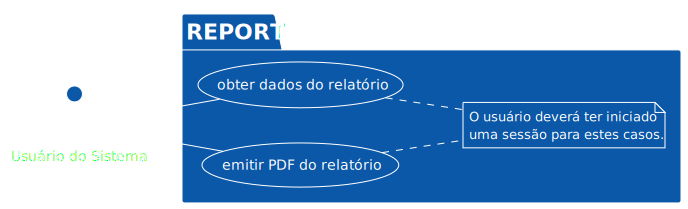
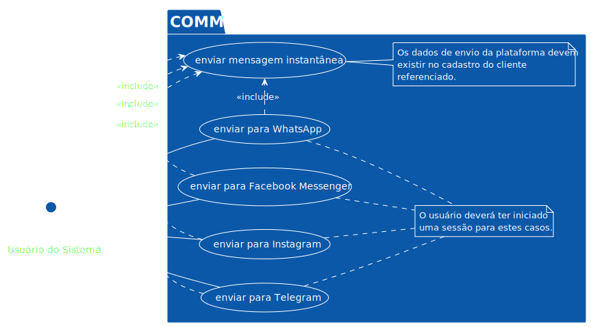

Diagramas de Casos de Uso
Os diagramas a seguir representam casos de uso para o sistema. Esses diagramas não têm a pretensão de serem completos, mas sim de ilustrar funcionalidades esperadas para o sistema, de forma visual.
Os casos de uso foram subdivididos em domínios, que poderão ilustrar os microsserviços envolvidos.
Sessão

Usuários
PlantUML rendering error: Failed to render inline diagram (Failed to generate PlantUML diagrams, PlantUML exited with code 200 (Error line 10 in file: /tmp/.tmpc3Mzef/068ad07a559d1c993213ad22e64f1380cbdf5ac3.puml Some diagram description contains errors ).).
Inquilinos
PlantUML rendering error: Failed to render inline diagram (Failed to generate PlantUML diagrams, PlantUML exited with code 200 (Error line 11 in file: /tmp/.tmpc3Mzef/efc707391e2f738978112443ce8c9346e824d4e9.puml Some diagram description contains errors ).).
Auditoria

Relatórios

Produtos
PlantUML rendering error: Failed to render inline diagram (Failed to generate PlantUML diagrams, PlantUML exited with code 200 (Error line 10 in file: /tmp/.tmpc3Mzef/92b572e1e92e412ca7e779b0cbeb1c6d16c9ba79.puml Some diagram description contains errors ).).
Estoque
PlantUML rendering error: Failed to render inline diagram (Failed to generate PlantUML diagrams, PlantUML exited with code 200 (Error line 8 in file: /tmp/.tmpc3Mzef/a43e8db0ff12b4048086ace3441f356e02ad0a90.puml Some diagram description contains errors ).).
Clientes
PlantUML rendering error: Failed to render inline diagram (Failed to generate PlantUML diagrams, PlantUML exited with code 200 (Error line 10 in file: /tmp/.tmpc3Mzef/708e143d29530b33d215eb8d675bce449b4e5066.puml Some diagram description contains errors ).).
Comunicação Instantânea
